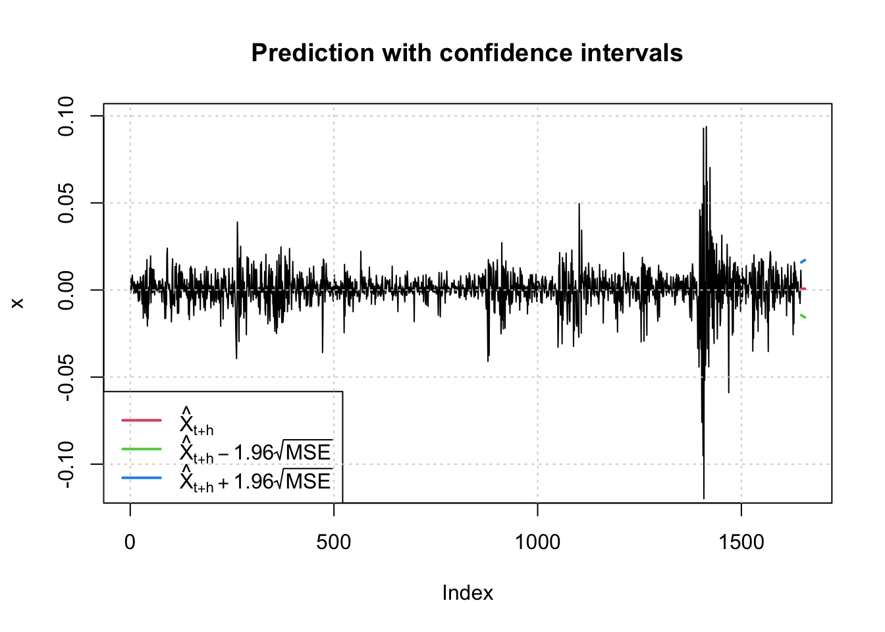

Chapter 4 Volatility Models
This chapter is heavily based on Chapter 12 of Chatfield and Xing (2019) and Chapter 3 of Tsay (2010) .
4.1 Introduction
- Anything that is observed sequentially over time is a time series.
- Financial time series analysis focuses on the theory and practice of asset valuation over time.
- In finance, the data can be collected much more frequently – High frequency data.
- Many financial time series also exhibit changing variance and this can have important consequences in formulating financial decisions.
Example: Financial time series
- Typically, when we analyze assets, we look at the percentage change in prices or returns.
# Tidy financial analysis
library(tidyquant)
sp500 <- tq_get("^GSPC", from = "1995-01-04", to = "2021-02-25" )
print(sp500)## # A tibble: 6,582 x 8
## symbol date open high low close volume adjusted
## <chr> <date> <dbl> <dbl> <dbl> <dbl> <dbl> <dbl>
## 1 ^GSPC 1995-01-04 459. 461. 458. 461. 3.20e8 461.
## 2 ^GSPC 1995-01-05 461. 461. 460. 460. 3.09e8 460.
## 3 ^GSPC 1995-01-06 460. 462. 459. 461. 3.08e8 461.
## 4 ^GSPC 1995-01-09 461. 462. 460. 461. 2.79e8 461.
## 5 ^GSPC 1995-01-10 461. 465. 461. 462. 3.52e8 462.
## 6 ^GSPC 1995-01-11 462. 464. 459. 462. 3.46e8 462.
## 7 ^GSPC 1995-01-12 462. 462. 461. 462. 3.13e8 462.
## 8 ^GSPC 1995-01-13 462. 466. 462. 466. 3.37e8 466.
## 9 ^GSPC 1995-01-16 466. 470. 466. 469. 3.16e8 469.
## 10 ^GSPC 1995-01-17 469. 470. 468. 470. 3.32e8 470.
## # … with 6,572 more rows# Convert each assets raw adjusted closing prices to returns
sp500_return <- sp500 %>%
tq_transmute(select = adjusted,
mutate_fun = periodReturn,
period = "daily")
sp500_return %>%
as_tsibble(index = date) %>%
autoplot(daily.returns) +
labs(x = "Day", y= "Daily return")Figure 4.1: Daily returns of the adjusted closing prices of the Standard & Poor’s 500 (S&P500) index from January 4, 1995 to February 25, 2021
- The mean of the return series seems to be stable with an average return of approximately zero.
The volatility of data changes over time.
- The focus of this chapter is to study some methods and econometric models for modeling the volatility (conditional standard deviation) of an asset return.
- These models are referred to as conditional heteroscedastic models.
- These models do not generally provide better point forecasts, but provides a better estimates of the (local) variance.
- As a result they allow to compute more reliable prediction intervals and therefore a better assessment of risk.
- Volatility models have many applications in economics and finance.
This chapter discusses various types of univariate volatility models
4.2 Structure of a Model for Asset Returns
Let, \(\{P_T\}\), denotes a time series.
- Let, \(\{Y_T\}\), denotes a derived series from which any trend and seasonal effects have been removed and linear (short-term correlations) effects may also have been removed.
- Examples : Let \(\{P_T\}\) be share price at the \(t\)th trading day.
\[Y_t=log P_t - log P_{t-1} \text{ or } Y_t = \frac{P_t-P_{t-1}}{P_{t-1} }\times100\%\]
- This is often called the return or the growth rate of a series.
Example
- Let \(P_t\) be the adjusted closing prices of the S&P500 at the \(t\)th trading day.
- Let \(Y_t\) be the daily returns of the S&P500 Index at each day as shown in Figure 4.1.
- The basic idea in volatility modelling is that the return series \(\{Y_t\}\) has very few serial correlations, but it is a dependent series.
- Consider the sample ACFs and PACFs of \(Y_t\), \(|Y_t|\) and \(Y_t^2\) (Figure 4.2)
Figure 4.2: Sample ACF (left) and sample PACF (right) of various functions of the daily returns, \(Y_t\), of adjusted closing prices of S&P500 Index from from January 4, 1995 to February 25, 2021. Top: Original series \(Y_t\); Middle: Absolute value of \(Y_t\); Bottom: Squared values of \(Y_t\).
- Sample ACFs of the returns \(Y_t\) suggest no significant serial correlations except for small ones at lags 1, 3 and 5.
- However, the sample ACFs of \(|Y_t|\) and \(Y_t^2\), show strong dependence over all lags.
- Important feature: the returns may seem serially uncorrelated, but it is dependent.
- This is a common observations for daily returns series
Volatility of a return series
- Let \(Y_t\) be the innovations in a linear time series model.
- Let \(X_t\) follow an \(ARMA(p,q)\) model, \[\phi(B)X_t=\theta(B)Y_t,\]
where \(\phi(B)\) and \(\theta(B)\) are polynomials of \(B\) with order \(p\) and \(q\), respectively.
Let \(\mathcal{F}_t\), the set of observed data up to time \(t\), (i.e. \(\{X_1,X_2,\dots, X_t\}\)).
Then the observation \(X_t\) can be written as \[X_t=\mu_t+Y_t,\] where \(\mu_t\) is the mean of \(X_t\) conditional on observed data \(\mathcal{F}_{t-1},\)
\[\mu_t=E(X_t|\mathcal{F}_{t-1})= \phi(B)X_t-(\theta(B)-1)Y_t\]
and the innovation series \(Y_t\) has mean 0 and conditional variance
\[\sigma_t^2=Var(X_t|\mathcal{F}_{t-1})=Var(Y_t|\mathcal{F}_{t-1})\]
- The conditional heteroscedastic models of this chapter are concerned with the evolution of \(\sigma_t^2\) over time.
- The model for \(\mu_t\) is referred to as the mean equation for \(X_t\) and the model for \(\sigma^2_t\) is the volatility equation for \(X_t.\)
4.3 Model Building
The process of building a volatility model for an asset return series consists of four main steps (Tsay 2010):
- Specify a mean equation by testing for serial dependence in the data and, if necessary, building an econometric model (e.g., an ARMA model) for the return series to remove any linear dependence.
- Use the residuals of the mean equation to test for ARCH effects.
- Specify a volatility model if ARCH effects are statistically significant, and perform a joint estimation of the mean and volatility equations.
- Check the fitted model carefully and refine it if necessary.
4.4 Testing for ARCH Effect
- Let \(Y_t = X_t − \mu_t\) be the residuals of the mean equation.
- The squared series \(Y_t^2\) is then used to check for conditional heteroscedasticity (also known as the ARCH effects).
- Volatility clustering implies a strong autocorrelation in squared series.
- There are two statistical tests for conditional heteroscedasticity
Method 1: Apply the usual Ljung–Box statistics \(Q(m)\) to the \(Y_t^2\) (McLeod and Li, 1983).
- The null hypothesis is that the first \(m\) lags of ACF of the \(Y_t^2\) series are zero.
Method 2: The Lagrange multiplier test of Engle (1982).
4.5 Autoregressive Conditional Heteroskedastic (ARCH) Models
ARCH model of Engle (1982) is the first model that provides a systematic framework for volatility modeling.
Main idea:
- \(Y_t\) is serially uncorrelated, but dependent,
- the dependence of \(Y_t\) can be described by a simple quadratic function of its lagged values.
- \(Y_t\) is serially uncorrelated, but dependent,
To better describe the idea, we represents \(Y_t\) having a zero means in the form
\[\begin{equation} \label{eq:1} Y_t=\sigma_t\epsilon_t, \end{equation}\]
\[\begin{equation} \label{eq:2} \sigma_t^2 =\alpha_0+\alpha_1Y_{t-1}^2+\dots+\alpha_mY_{t-m}^2, \end{equation}\]
where \(\{\epsilon_t\}\) is a sequence of iid random variables with mean zero and variance 1.
- \(\sigma_t\) can be thought of as the local conditional standard deviation of the process.
- \(\alpha_0>0\), and \(\alpha_i\geq0\) for \(i > 0\).
- To ensure that the unconditional variance of \(Y_t\) is finite, coefficients \(\alpha_i\) must satisfy some regularity conditions.
- The \(\epsilon_t\) may follow the standard normal or a standardized Student-t or a generalized error distribution.
- A model for \(Y_t\) satisfying Equations and is called an autoregressive conditional heteroskedastic model of order \(m\) (\(ARCH(m)\))
- Note that Equation does not include an ‘error’ term and therefore does not define a stochastic process.
The ARCH model allows for volatility clustering as the conditional variance \(\sigma_t^2\) in Equation depends on the lagged squared innovations \(Y^2_{t−1}\). A large (positive or negative) residual at time \(t − 1\) implies that \(Y^2_{t−1}\) is large and consequently the conditional variance \(\sigma_t^2\) will be large as \(\alpha_i ≥ 0\). Thereby, large shocks tend to be followed by large shocks (in absolute terms) and small shocks tend to be followed by small shocks (in absolute terms). This is the feature we call volatility clustering.
However, large variance does not necessarily produce a large realization. It only says that the probability of obtaining a large variate is greater than that of a smaller variance.
4.5.1 Example: Building an ARCH Model
Let’s apply the modeling procedure to build a simple ARCH model for the daily returns, \(X_t,\), of adjusted closing prices of the S&P500 index.
- Figure 4.1 shows the daily return series from January 4, 1995 to February 25, 2021.
- The sample ACF and PACF of the squared returns in the bottom panel of Figure 4.2, show the existence of conditional heteroscedasticity.
- If an ARCH effect is found to be significant, one can use the PACF of \(Y_t^2\) to determine the ARCH order.
We consider an ARCH(2) model with the following specification for the daily return series
\[X_t=\mu+Y_t,\] \[Y_t=\sigma_t\epsilon_t,\] \[\sigma_t^2=\alpha_0+\alpha_1Y_{t-1}^2 + \alpha_2Y_{t-2}^2.\]
- We use the R function
garchFitin the R packagefGarchto estimate the model.
# install.packages("fGarch")
library(fGarch)
fit1 <- garchFit(~garch(2,0), data =sp500_return$daily.returns)
summary(fit1)##
## Title:
## GARCH Modelling
##
## Call:
## garchFit(formula = ~garch(2, 0), data = sp500_return$daily.returns)
##
## Mean and Variance Equation:
## data ~ garch(2, 0)
## <environment: 0x7fadb53fae90>
## [data = sp500_return$daily.returns]
##
## Conditional Distribution:
## norm
##
## Coefficient(s):
## mu omega alpha1 alpha2
## 7.7804e-04 5.8828e-05 2.2118e-01 3.8733e-01
##
## Std. Errors:
## based on Hessian
##
## Error Analysis:
## Estimate Std. Error t value Pr(>|t|)
## mu 7.780e-04 1.098e-04 7.087 1.37e-12 ***
## omega 5.883e-05 1.818e-06 32.366 < 2e-16 ***
## alpha1 2.212e-01 1.967e-02 11.245 < 2e-16 ***
## alpha2 3.873e-01 2.368e-02 16.354 < 2e-16 ***
## ---
## Signif. codes:
## 0 '***' 0.001 '**' 0.01 '*' 0.05 '.' 0.1 ' ' 1
##
## Log Likelihood:
## 20748 normalized: 3.152
##
## Description:
## Sat Feb 27 13:39:26 2021 by user:
##
##
## Standardised Residuals Tests:
## Statistic p-Value
## Jarque-Bera Test R Chi^2 2657 0
## Shapiro-Wilk Test R W NA NA
## Ljung-Box Test R Q(10) 21.61 0.01721
## Ljung-Box Test R Q(15) 34.45 0.002941
## Ljung-Box Test R Q(20) 38.39 0.007933
## Ljung-Box Test R^2 Q(10) 362.7 0
## Ljung-Box Test R^2 Q(15) 546.8 0
## Ljung-Box Test R^2 Q(20) 713.2 0
## LM Arch Test R TR^2 428.5 0
##
## Information Criterion Statistics:
## AIC BIC SIC HQIC
## -6.303 -6.299 -6.303 -6.302Plot the result
sp500_return <- sp500_return %>%
mutate(vol = volatility(fit1),
resid.st = residuals(fit1, standardize=T)) %>%
as_tsibble(index = date, regular = FALSE)
p1 <- sp500_return %>% autoplot(vol)
p2 <- sp500_return %>% autoplot(resid.st)
p3 <- sp500_return %>% ACF(resid.st) %>% autoplot()
p4 <- sp500_return %>% PACF(resid.st) %>% autoplot()
p5 <- sp500_return %>% ACF(resid.st^2) %>% autoplot()
p6 <- sp500_return %>% PACF(resid.st^2) %>% autoplot()Figure 4.3: (a) Estimated volatility \(\hat{\sigma_t}\), (b) the standardized residual \(\hat{\epsilon_t}\), (c) sample ACF of \(\hat{\epsilon_t}\), (d) sample PACF of \(\hat{\epsilon_t}\), (e) sample ACF of \(\hat{\epsilon_t^2}\), (d) sample PACF of \(\hat{\epsilon_t^2}\), in the ARCH(2) model for daily returns of adjusted closing prices of the S&P500 Index from January 4, 1995 to February 25, 2021.
- Assuming that \(\epsilon_t\) are iid, standard normal, we get the fitted model as follows:
\[X_t = 0.0007804_{(1.098e-04)} + Y_t, \text{ }Y_t=\sigma_t\epsilon_t,\]
\[\sigma_t^2=0.00005883_{(1.818e-06)}+0.2212_{(1.967e-02)}Y_{t-1}^2 + 0.3873_{(2.368e-02)}Y_{t-2}^2\]
where the standard errors of the parameters are given in the parentheses.
- Both the output and the plot show that the estimated residuals still have conditional heteroscedasticities.
- Therefore, the ARCH(2) model is not adequate.
4.6 Generalized ARCH (GARCH) Models
Although the ARCH model is simple, it often requires many parameters to adequately describe the volatility process of an asset return.
Bollerslev (1986) proposes a useful extension known as the generalized ARCH (GARCH) model.
The ARCH model has been generalized to allow the variance to depend on past values of \(Y_t^2\) as well as on past values of \(\sigma^2_t.\)
A model for \(Y_t\) satisfying Equations is said to follow a generalized ARCH (or GARCH) model of order \((m,s)\) (\(GARCH(m,s)\)) when the local conditional variance is given by
\[\begin{equation} \label{eq:3} \sigma_t^2 =\alpha_0+\sum_{i=1}^m\alpha_iY_{t-i}^2+\sum_{j=1}^s\beta_j\sigma_{t-j}^2, \end{equation}\]
where \(\{\epsilon_t\}\) is a sequence of iid random variables with mean 0 and variance 1, \(\alpha_0>0,\) \(\alpha_i\geq0,\) \(\beta_j\geq0,\) and \(\sum_{i=1}^{max(m,s)}(\alpha_i+\beta_i)<1.\)
Here, \(\alpha_i=0\) for \(i>m\) and \(\beta_j =0\) for \(j>s.\)
The constraint on \(\alpha_i+\beta_j\) implies that the unconditional variance of \(Y_t\) is finite, whereas its conditional variance \(\sigma_t^2\) evolves over time.
\(\epsilon_t\) is often assumed to follow a standard normal or standardized Student-t distribution or generalized error distribution.
Equation reduces to a pure ARCH(\(m\)) model if \(s = 0\) (i.e. GARCH(\(m,0\))).
The \(\alpha_i\) and \(\beta_j\) are known as ARCH and GARCH parameters, respectively.
To understand properties of GARCH models, it is informative to use the following representation.
- Let \(\eta_t = Y_t^2 − \sigma_t^2.\)
- Then \(\sigma_t^2= Y_t^2 −\eta_t.\)
- By plugging \(\sigma_{t-1}^2= Y_{t-1}^2 −\eta_{t-1}\) (\(i=0,\dots,s\)) into Equation , we get the GARCH model as
\[\begin{equation} \label{eq:4} Y_t^2 =\alpha_0+\sum_{i=1}^{max(m,s)}(\alpha_i+\beta_i)Y_{t-i}^2+\eta_t-\sum_{j=1}^s\beta_j\eta_{t-j}. \end{equation}\]
- It is easy to check that \(\{\eta_t \}\) is a martingale difference series [i.e., \(E(\eta_t ) = 0\) and \(cov(\eta_t , \eta_{t-j} ) = 0\) for \(j\geq 1\)].
- However, \(\{\eta_t \}\) in general is not an iid sequence.
- Equation is an ARMA form for the squared series \(Y_t^2\).
- Therefore, a GARCH model can be regarded as an application of the ARMA idea to the squared series \(Y_t^2\).
- Therefore, the same invertibility and stationary assumptions of ARMA models apply to GARCh models.
- For example, \(Y_t\) is covariance stationary, if all roots of \(1-\sum_{j=1}^{max(m,s)}(\alpha_j+\beta_j)z^j=0\) lie outside the unit circle.
GARCH(\(1,1\)) model
- The \(GARCH(1,1)\) model is often used to fit financial time series.
- The properties of GARCH models can easily be understood by focusing on the simplest \(GARCH(1,1)\) model with
\[\sigma_t^2 = \alpha_0+\alpha_1Y_{t-1}^2 + \beta_1\sigma_{t-1}^2, \text{ } 0\leq\alpha_1, \beta_1\leq 1, (\alpha_1+\beta_1)<1.\]
- The model implies that a large \(Y_{t-1}^2\) or \(\sigma_{t-1}^2\) will lead to a large \(\sigma_{t}^2\), which in turn will give rise to a large \(Y_t^2=\sigma_t^2\epsilon_t^2.\)
- This again generate the well-known behaviour of volatility clustering in financial time series.
4.6.1 Prediction of volatilities
- Both ARCH and GARCH models do not affect point forecasts of the original observed variables.
- Therefore, it is difficult to make a fair comparison of the forecasting abilities of different models for changing variance.
- Therefore, both the modeling aspect (understanding the changing structure of a series), and the assessment of risk, are more important than their ability to make point forecasts.
- Forecasts of a GARCH model are similar to those of an ARMA model.
- Consider the GARCH(1,1) model.
- Let the forecast origin is \(h\).
- For 1-step ahead forecast, we have
\[\sigma_{h+1}^2 = \alpha_0+\alpha_1Y_h^2+\beta_1\sigma_h^2\] where \(Y_h\) and \(\sigma_h^2\) are known at the time index \(h\).
- Then, 1-step ahead forecast is
\[\sigma_{h}^2(1) = \alpha_0+\alpha_1Y_h^2+\beta_1\sigma_h^2.\]
- For multistep-ahead forecasts, we use \(Y_t^2 = \sigma_t^2\epsilon_t^2.\)
- Then the volatility equation can be written as
\[\sigma_{t+1}^2 = \alpha_0+(\alpha_1+\beta_1)\sigma_t^2+\alpha_1\sigma_t^2(\epsilon_t^2-1).\] - When \(t = h + 1\), we get,
\[\sigma_{h+2}^2 = \alpha_0+(\alpha_1+\beta_1)\sigma_{h+1}^2+\alpha_1\sigma_{h+1}^2(\epsilon_{h+1}^2-1).\] - Since \(E(\epsilon_{h+1}^2-1|\mathcal{F}_t)=0\), the 2-step-ahead volatility forecast at the forecast origin \(h\) satisfies the equation
\[\sigma_{h}^2(2) = \alpha_0+(\alpha_1+\beta_1)\sigma_h^2(1).\]
In general, we can write \[\sigma_{h}^2(k) = \alpha_0+(\alpha_1+\beta_1)\sigma_h^2(k-1), \quad k>1.\]
This result is similar to an ARMA(1,1) model with AR polynomial \(1 − (\alpha_1 + \beta_1)B\).
4.6.2 Example: Building a GARCH Model
- Let’s apply the modeling procedure to build a \(GARCH(1,1)\) model for the daily returns, \(X_t\), of adjusted closing prices of the S&P500 index.
- Figure 4.1 shows the daily return series from January 4, 1995 to February 25, 2021.
- The sample ACF and PACF of the squared returns in the bottom panel of Figure 4.2, show the existence of conditional heteroscedasticity.
##
## Title:
## GARCH Modelling
##
## Call:
## garchFit(formula = ~garch(1, 1), data = sp500_return$daily.returns)
##
## Mean and Variance Equation:
## data ~ garch(1, 1)
## <environment: 0x7fddd338b750>
## [data = sp500_return$daily.returns]
##
## Conditional Distribution:
## norm
##
## Coefficient(s):
## mu omega alpha1 beta1
## 7.2933e-04 2.1055e-06 1.2134e-01 8.6479e-01
##
## Std. Errors:
## based on Hessian
##
## Error Analysis:
## Estimate Std. Error t value Pr(>|t|)
## mu 7.293e-04 9.722e-05 7.502 6.28e-14 ***
## omega 2.106e-06 2.656e-07 7.927 2.22e-15 ***
## alpha1 1.213e-01 8.705e-03 13.940 < 2e-16 ***
## beta1 8.648e-01 8.885e-03 97.335 < 2e-16 ***
## ---
## Signif. codes:
## 0 '***' 0.001 '**' 0.01 '*' 0.05 '.' 0.1 ' ' 1
##
## Log Likelihood:
## 21322 normalized: 3.239
##
## Description:
## Sat Feb 27 16:30:00 2021 by user:
##
##
## Standardised Residuals Tests:
## Statistic p-Value
## Jarque-Bera Test R Chi^2 1195 0
## Shapiro-Wilk Test R W NA NA
## Ljung-Box Test R Q(10) 21.65 0.01699
## Ljung-Box Test R Q(15) 30.7 0.009632
## Ljung-Box Test R Q(20) 34.98 0.0202
## Ljung-Box Test R^2 Q(10) 12.97 0.2255
## Ljung-Box Test R^2 Q(15) 16.83 0.329
## Ljung-Box Test R^2 Q(20) 17.81 0.5999
## LM Arch Test R TR^2 13.93 0.3055
##
## Information Criterion Statistics:
## AIC BIC SIC HQIC
## -6.478 -6.473 -6.478 -6.476Plot the result
sp500_return <- sp500_return %>%
mutate(vol = volatility(fit2),
resid.st = residuals(fit2, standardize=T)) %>%
as_tsibble(index = date, regular = FALSE)
p1 <- sp500_return %>% autoplot(vol)
p2 <- sp500_return %>% autoplot(resid.st)
p3 <- sp500_return %>% ACF(resid.st) %>% autoplot()
p4 <- sp500_return %>% PACF(resid.st) %>% autoplot()
p5 <- sp500_return %>% ACF(resid.st^2) %>% autoplot()
p6 <- sp500_return %>% PACF(resid.st^2) %>% autoplot()Figure 4.4: (a) Estimated volatility \(\hat{\sigma_t}\), (b) the standardized residual \(\hat{\epsilon_t}\), (c) sample ACF of \(\hat{\epsilon_t}\), (d) sample PACF of \(\hat{\epsilon_t}\), (e) sample ACF of \(\hat{\epsilon_t^2}\), (d) sample PACF of \(\hat{\epsilon_t^2}\), in the GARCH(1,1) model for daily returns of adjusted closing prices of the S&P500 Index from January 4, 1995 to February 25, 2021.
- Now the model is adequate as the standardized residuals in the fitted \(GARCH(1,1)\) model show little conditional heteroscedasticity.
## predict
predict(fit2, n.ahead = 10)
## predict with plotting
## 95% confidence level
predict(fit2, n.ahead = 10, plot=TRUE, conf=.95)
4.7 The ARMA-GARCH Models
- The dynamics of asset returns and their volatility can be modeled by combining GARCH models with the linear time series models discussed in Chapter 2.
- Let \(X_t\) follows an ARMA model with GARCH innovations.
- Then, it yields the following \(ARMA(p,q)-GARCH(m,s)\) model for \((X_t, \sigma_t):\)
\[X_t=\mu+\sum_{i=1}^p\phi_iX_{t-i}+\sum_{j=1}^q\theta_jY_{t-j} + Y_t, \quad Y_t=\sigma_t\epsilon_t,\]
\[\sigma^2_t=\alpha_0+ \sum_{i=1}^m\alpha_iY_{t-i}^2+\sum_{j=1}^s\beta_j\sigma_{t-j}^2.\]
- The \(\epsilon_t\) are iid standard normal or Student-t random variables.
- The second equation can be replaced by other volatility models so that different aspects of volatilities can be characterized.
4.7.1 Example: Building an ARMA-GARCH Model
- Let’s apply the modeling procedure to build an \(ARMA(1,1)-GARCH(1,1)\) model for the daily returns, \(X_t,\) of adjusted closing prices of the S&P500 index
\[X_t = \mu + \phi X_{t-1}+\theta Y_{t-1} + Y_t,\] \[Y_t= \sigma_t\epsilon_t,\]
\[\sigma_t^2=\alpha_0+\alpha Y_{t-1}^2+\beta\sigma_{t-1}^2.\]
- Let \(\epsilon_t\) are iid standard normal.
##
## Title:
## GARCH Modelling
##
## Call:
## garchFit(formula = ~arma(1, 1) + garch(1, 1), data = sp500_return$daily.returns)
##
## Mean and Variance Equation:
## data ~ arma(1, 1) + garch(1, 1)
## <environment: 0x7fa4b68f4ad8>
## [data = sp500_return$daily.returns]
##
## Conditional Distribution:
## norm
##
## Coefficient(s):
## mu ar1 ma1 omega
## 8.7477e-05 8.8353e-01 -9.1463e-01 2.0642e-06
## alpha1 beta1
## 1.1989e-01 8.6645e-01
##
## Std. Errors:
## based on Hessian
##
## Error Analysis:
## Estimate Std. Error t value Pr(>|t|)
## mu 8.748e-05 4.726e-05 1.851 0.0642 .
## ar1 8.835e-01 6.139e-02 14.392 < 2e-16 ***
## ma1 -9.146e-01 5.330e-02 -17.160 < 2e-16 ***
## omega 2.064e-06 2.603e-07 7.932 2.22e-15 ***
## alpha1 1.199e-01 8.565e-03 13.997 < 2e-16 ***
## beta1 8.664e-01 8.736e-03 99.186 < 2e-16 ***
## ---
## Signif. codes:
## 0 '***' 0.001 '**' 0.01 '*' 0.05 '.' 0.1 ' ' 1
##
## Log Likelihood:
## 21335 normalized: 3.241
##
## Description:
## Sat Feb 27 20:47:32 2021 by user:
##
##
## Standardised Residuals Tests:
## Statistic p-Value
## Jarque-Bera Test R Chi^2 1279 0
## Shapiro-Wilk Test R W NA NA
## Ljung-Box Test R Q(10) 13.06 0.2206
## Ljung-Box Test R Q(15) 22.45 0.09663
## Ljung-Box Test R Q(20) 28.44 0.09946
## Ljung-Box Test R^2 Q(10) 14.88 0.1364
## Ljung-Box Test R^2 Q(15) 18.44 0.2403
## Ljung-Box Test R^2 Q(20) 19.64 0.4806
## LM Arch Test R TR^2 15.35 0.2229
##
## Information Criterion Statistics:
## AIC BIC SIC HQIC
## -6.481 -6.475 -6.481 -6.479Plot the result
sp500_return <- sp500_return %>%
mutate(vol = volatility(fit3),
resid.st = residuals(fit3, standardize=T)) %>%
as_tsibble(index = date, regular = FALSE)
p1 <- sp500_return %>% autoplot(vol)
p2 <- sp500_return %>% autoplot(resid.st)
p3 <- sp500_return %>% ACF(resid.st) %>% autoplot()
p4 <- sp500_return %>% PACF(resid.st) %>% autoplot()
p5 <- sp500_return %>% ACF(resid.st^2) %>% autoplot()
p6 <- sp500_return %>% PACF(resid.st^2) %>% autoplot()Figure 4.5: (a) Estimated volatility \(\hat{\sigma_t}\), (b) the standardized residual \(\hat{\epsilon_t}\), (c) sample ACF of \(\hat{\epsilon_t}\), (d) sample PACF of \(\hat{\epsilon_t}\), (e) sample ACF of \(\hat{\epsilon_t^2}\), (d) sample PACF of \(\hat{\epsilon_t^2}\), in the ARMA(1,1)-GARCH(1,1) model for daily returns of adjusted closing prices of the S&P500 Index from January 4, 1995 to February 25, 2021.
4.8 Other ARCH-Type Models
- There are many other types of ARCH models.
- It is important to use the context and any background theory, when choosing between different models for changing variance.
4.8.1 The Integrated GARCH (IGARCH) model
- The GARCH model becomes an IGARCH mode, if the AR polynomial of the GARCH representation in Equation has a unit root.
- Similar to ARIMA models, in IGARCH models the impact of past squared shocks \(\eta_{t−i} = Y_{t-i}^2 −\sigma_{t-i}^2\) for \(i>0\) on \(Y_t^2\) is persistent.
- The IGARCH(1,1) model is of the form
\[Y_t=\sigma_t\epsilon_t,\] \[\sigma_t^2=\alpha+\beta\sigma_{t-1}^2+(1-\beta)Y_{t-1}^2,\]
where \(\{\epsilon_t\}\) is a sequence of iid random variables with mean zero and variance 1 and \(0<\beta<1.\)
- More generally, model for \(Y_t\) satisfying Equations is said to follow a Integrated GARCH model of order \((m,s)\) (\(IGARCH(m,s)\)) when the local conditional variance is given by
\[\begin{equation} \label{eq:5} \sigma_t^2 =\alpha_0+\sum_{i=1}^m\alpha_iY_{t-i}^2+\sum_{j=1}^s\beta_j\sigma_{t-j}^2, \end{equation}\]
where \(\{\epsilon_t\}\) is a sequence of iid random variables with mean 0 and variance 1, with \(\sum_{i=1}^{m}\alpha_i+\sum_{j=1}^{s}\beta_j=1.\)
- Due to the above condition, the unconditional variance of \(Y_t\), hence that of \(X_t\) , is not defined under \(IGARCH(1,1)\) model.
- Under certain conditions, the IGARCH models are strictly stationary but not weakly stationary as they do not have the first two moments.
- When \(\alpha1 + \beta1 = 1\), \[\sigma^2_h(k )=\sigma^2_h(1 )+(k −1)\alpha_0,\quad k\geq1,\] where h is the forecast origin.
- As a result, the effect of \(\sigma^2_h(1 )\) on future volatilities is also persistent, and the volatility forecasts generates a straight line with slope \(\alpha_0\).
- When \(\alpha_0 = 0\), the volatility forecasts are simply \(\sigma_h^2(1)\) for all forecast horizons;
Example in R
# For univariate GARCH models)
library(rugarch)
spec3 <- ugarchspec(
variance.model=list(model="iGARCH",
garchOrder=c(1,1)),
mean.model=list(armaOrder=c(0,0),
include.mean=FALSE),
distribution.model="norm",
fixed.pars=list(omega=0))
fit <- ugarchfit(spec3,
data = sp500_return$daily.returns)
summary(fit)
fit
plot(fit,which="all")- Useful materials: The
rugarchpackage vignette
4.9 Asymmetry in Volatility
- Some equity markets show asymmetry in their volatility clusters
- Asymmetric Volatility is when the volatility of a market or stock is higher when a market is in a downtrend and volatility tends to be lower in an uptrend.
- There may be a range of causes of asymmetric volatility, but factors such as leverage, panic selling, and serial correlation are often some of the drivers.
- The asymmetric GARCH models are employed to capture the asymmetric characteristics of volatility.
4.10 The exponential GARCH model
- In 1991, Nelson proposed the Exponential GARCH model to allow for asymmetric effects between positive and negative asset returns.
- An \(EGARCH(h,k)\) model can be written as
\[Y_t=\sigma_t\epsilon_t,\] \[\begin{equation} \label{eq:6} log(\sigma_t^2) =\alpha_0+\sum_{i=1}^h\beta_ilog(\sigma_{t-i}^2)+ \sum_{j=1}^kf_j(\epsilon_{t-j}) \end{equation}\]
where the \(\{\epsilon_t\}\) is a sequence of iid random variables with mean 0 and variance 1, and \(f_j(\epsilon)=\alpha_j\epsilon+\gamma_j(|\epsilon|-E|\epsilon|)\)
- Both \(\epsilon_t\) and \(|\epsilon_t|-E|\epsilon_t|\) are zero-mean iid sequences with continuous distributions.
- Therefore, \(E[f_j(\epsilon_t)]=0\)
- The asymmetry of \(f_j(\epsilon_t)\) can easily be seen by rewriting it as
\[ f_j(\epsilon_t)= \begin{cases} (\alpha_j+\gamma_j)\epsilon_t-\gamma_jE|\epsilon_t|,& \text{if } \epsilon_t\geq 0\\ (\alpha_j-\gamma_j)\epsilon_t-\gamma_jE|\epsilon_t|,& \text{if } \epsilon_t< 0 \end{cases} \]
- This shows the asymmetry of the volatility response to positive and negative returns.
- The model differs from the GARCH model in several ways
- First, it uses logged conditional variance to relax the positiveness constraint of model coefficients.
- Second, the use of \(f_j(\epsilon_t)\) enables the model to respond asymmetrically to positive and negative lagged values of \(Y_t.\)
- Some additional properties of the EGARCH model can be found in Nelson (1991).
4.11 Stochastic Volatility Models
- The formulae for \(\sigma_t^2\) in all GARCH type models are deterministic as there is no “error” term in either equation.
- An alternative approach to ARCH or GARCH models is to assume that \(\sigma_t\) follows a Stochastic process.
- This can be usually done by modelling \(log(\sigma_t^2)\) or \(log(\sigma_t)\) to ensure that \(\sigma_t^2\) remains positive.
- Example: Let \(log(\sigma_t^2)=h_t\) and \(h_t\) follows an AR process with an “error” component that is independent of the \(\{\epsilon_t\}\) in the innovation series \(\{Y_t\}\),
\[Y_t=\sigma_t\epsilon_t, \quad \sigma_t^2=e^{h_t},\]
\[h_t=\phi_0+\phi_1h_{t-1}+\dots+\phi_ph_{t-p}+\eta_t,\]
which has \(AP(p)\) dynamics for \(log\sigma_t^2.\)
- These type of models are called stochastic volatility or Stochastic variance models.
- The \(\epsilon_t\) and \(\eta_t\) are assumed to be independent normally distributed random variables with \(\epsilon_t\sim N(0,1)\) and \(\eta_t\sim N(0,\sigma^2)\)
- In certain cases, it is more reasonable to assume that \(\sigma_t\) changes stochastically through time rather than deterministically.
- Example: During a sudden change in volatility in financial market due to a special event such as a war involving oil producing countries
4.12 References:
Chatfield, C., & Xing, H. (2019). The analysis of time series: an introduction with R. CRC press.
Tsay, R. S. (2010). Analysis of Financial Time Series. John Wiley & Sons..
References
Chatfield, Chris, and Haipeng Xing. 2019. The Analysis of Time Series: An Introduction with R. CRC press.
Tsay, Ruey S. 2010. Analysis of Financial Time Series. John Wiley & Sons.